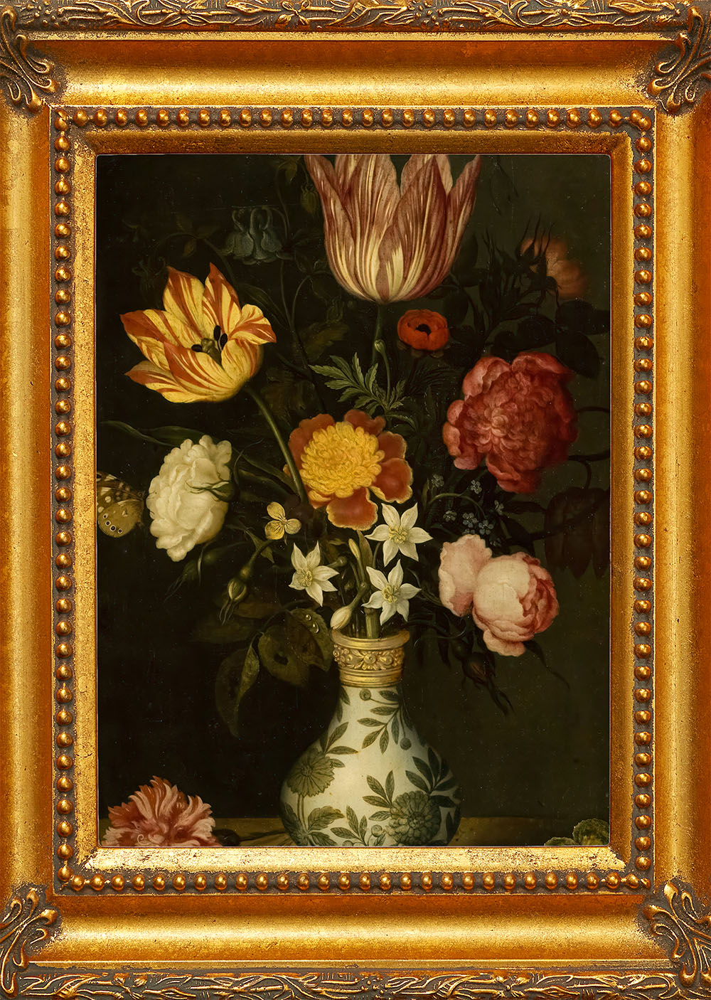
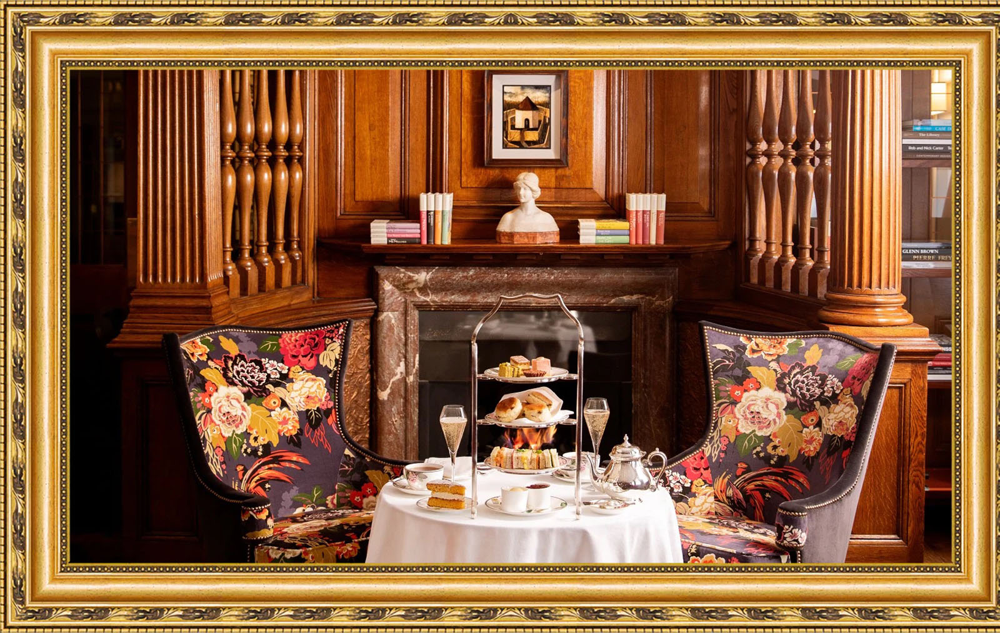

About Us
Inspired by traditional English tea rooms, Ma Cheri Tea House combines a traditional tea experience with a stunning historical location. Originally a residential house, the tea house was built in the 1700s but renovated into a commercial space in 2014. When it opened a year later, Ma Cheri Tea House gained recognition and acclaim for its stunning decor while still providing a fantastic dining experience. This includes the Lux Life award for Best Independent Tea House in 2021, and Most Authentic English Tea room in 2024. Filled with beautiful paintings from well known artists, walking through the tea house is almost like walking through a museum complete with placards for any historical object you may see.